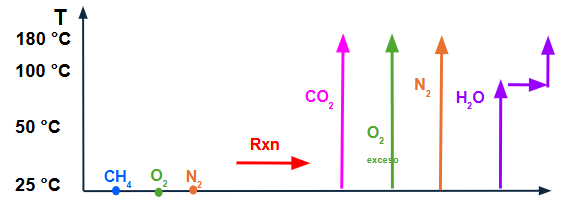

COMBUSTIÓN DE GLP (Propano + Butano)
Guía interactiva de balances de materia y energía (Problema 2.1)
Datos de Alimentación y Reacciones
Se quema GLP con un flujo de 80 kmol/h, compuesto por 60% molar de Propano (C₃H₈) y 40% molar de Butano (C₄H₁₀). El combustible ingresa a 25 °C.
- Flujo de C₃H₈ = 0.60 × 80 = 48 kmol/h
- Flujo de C₄H₁₀ = 0.40 × 80 = 32 kmol/h
Reacciones de combustión completa:
$$C_3H_8 + 5O_2 \rightarrow 3CO_2 + 4H_2O$$
$$C_4H_{10} + 6.5O_2 \rightarrow 4CO_2 + 5H_2O$$
Validación de Concepto
1. ¿Cuál es el flujo molar de Oxígeno teórico requerido únicamente para el Propano (C₃H₈)?
Solución del Paso 1
La estequiometría de la reacción del propano indica que se necesitan 5 moles de $O_2$ por cada mol de $C_3H_8$.
$$O_{2, C3H8} = n_{C3H8} \times 5 = 48 \text{ kmol/h} \times 5 = 240 \text{ kmol } O_2\text{/h}$$Cálculo del Aire Alimentado
Se utiliza un 20% de exceso de aire. El aire atmosférico ingresa a 25 °C, 1 atm y 60% de humedad relativa. Presión de vapor de agua a 25 °C = 3.17 kPa.
Validación de Concepto
1. Para calcular el volumen de aire alimentado ($m^3/h$) usando la ley de los gases ideales, ¿qué flujo molar debes utilizar?
Solución del Paso 2
1. Oxígeno total teórico: $240 \text{ (propano)} + (32 \times 6.5) \text{ (butano)} = 448 \text{ kmol } O_2\text{/h}$
2. Aire seco real (con 20% exceso):
$$Aire_{seco} = \frac{448}{0.21} \times 1.20 = 2560 \text{ kmol/h}$$3. Humedad del aire:
$$P_v = 0.60 \times 3.17 = 1.902 \text{ kPa}$$ $$Y = \frac{1.902}{101.325 - 1.902} = 0.01915 \text{ mol } H_2O / \text{mol aire seco}$$ $$n_{H2O} = 2560 \times 0.01915 = 49.02 \text{ kmol/h}$$4. Volumen total (Ley de Gases Ideales):
$$V = \frac{n_{total} R T}{P} = \frac{(2560 + 49.02) \times 0.08206 \times 298.15}{1} = \mathbf{63,824 \text{ } m^3/h}$$Composición de los Humos
Tras la combustión, los productos son $CO_2$, $H_2O$, $O_2$ (en exceso) y $N_2$ (del aire).
Validación de Concepto
1. Al calcular la composición de los humos en base seca, ¿qué componente debe ser EXCLUIDO del denominador (moles totales)?
Solución del Paso 3
Moles de productos:
- $CO_2 = (48 \times 3) + (32 \times 4) = 144 + 128 = 272 \text{ kmol/h}$
- $O_2 \text{ (exceso)} = 448 \times 0.20 = 89.6 \text{ kmol/h}$
- $N_2 = 2560 \times 0.79 = 2022.4 \text{ kmol/h}$
Total de humos secos: $272 + 89.6 + 2022.4 = 2384 \text{ kmol/h}$
Composición (% mol base seca):
$$ \% CO_2 = \frac{272}{2384} \times 100 = 11.41\% $$
$$ \% O_2 = \frac{89.6}{2384} \times 100 = 3.76\% $$
$$ \% N_2 = \frac{2022.4}{2384} \times 100 = 84.83\% $$
Humedad de los Gases de Salida
El agua total en los humos incluye la producida por la combustión MÁS la que ya venía en el aire atmosférico.
Validación de Concepto
1. ¿Cuál es la fórmula correcta para la "humedad de los gases de salida en base seca"?
Solución del Paso 4
Agua de combustión: $(48 \times 4) + (32 \times 5) = 192 + 160 = 352 \text{ kmol/h}$
Agua del aire: $49.02 \text{ kmol/h}$
Agua total: $352 + 49.02 = 401.02 \text{ kmol/h}$
Humedad en base seca:
$$ \text{Humedad} = \frac{401.02}{2384} = \mathbf{0.1682 \text{ mol } H_2O / \text{mol humo seco}} $$Calor Sensible de los Humos
Los humos salen a 180 °C. Debemos calcular la entalpía sensible de cada componente desde la temperatura de referencia (25 °C).

+Camara+->+Salidas+a+180%C2%B0C'">Fig 1. Esquema del balance de energía. (Reemplazar con diagrama_real.png)
Validación de Concepto
1. ¿Por qué el cálculo del calor sensible del agua ($H_2O$) NO puede hacerse con un solo término $n \cdot C_p \cdot \Delta T$ desde 25°C hasta 180°C?
Solución del Paso 5
Para el agua (401.02 kmol/h), el camino termodinámico desde 25°C hasta 180°C tiene 3 etapas:
- Calentar líquido (25°C a 100°C): $401.02 \times 5.65 = 2,265.76 \text{ MJ/h}$
- Vaporización a 100°C: $401.02 \times 40.65 = 16,301.46 \text{ MJ/h}$
- Calentar vapor (100°C a 180°C): $401.02 \times 2.69 = 1,078.74 \text{ MJ/h}$
Calor total del agua: $2,265.76 + 16,301.46 + 1,078.74 = 19,645.96 \text{ MJ/h}$
Sumando los gases secos ($CO_2, O_2, N_2$) usando sus $\Delta H$ a 180°C de la tabla:
$$Q_{humos} = 1,876.8 + 430.08 + 9,505.28 + 19,645.96 = \mathbf{31,458.12 \text{ MJ/h}}$$Calor de Reacción y Balance Global
El agua en los humos sale como vapor a 180°C. Por lo tanto, la energía liberada por la combustión corresponde al Poder Calorífico Inferior (PCI).
Validación Final
1. Si usáramos el Poder Calorífico Superior (PCS) en lugar del PCI para calcular el calor de reacción, ¿qué error estaríamos cometiendo?
¡Solución Completa!
1. Ajuste a PCI (Agua como vapor):
$$ \Delta Hc_{PCI, C3H8} = -2220 + (4 \times 40.65) = -2057.4 \text{ kJ/mol} $$
$$ \Delta Hc_{PCI, C4H10} = -2877 + (5 \times 40.65) = -2673.75 \text{ kJ/mol} $$
2. Calor de Reacción:
$$ Q_{rxn} = (48 \times -2057.4) + (32 \times -2673.75) = \mathbf{-184,315.2 \text{ MJ/h}} $$3. Balance de Energía Global:
$$ Q_{transferido} = Q_{rxn} - Q_{humos} $$
$$ Q_{transferido} = -184,315.2 - 31,458.12 = \mathbf{-215,773.32 \text{ MJ/h}} $$